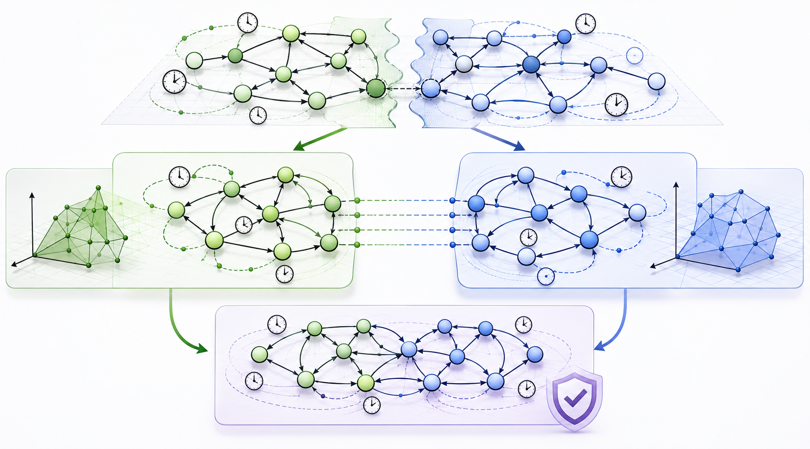

Publications
Compositional Verification of Timed Automata via Violation Assumptions
Teaching
Teaching
Instructor, Theory of Automata and Formal Languages (Undergraduate Course)
-
Spring 2024
Taught jointly with Professor Mohammad Izadi - Fall 2024
Teaching Assistance
Head Teaching Assistant,
Theory of Automata and Formal Languages (Undergraduate Course)
Instructor: Professor Ali Movaghar
- Spring 2022, Fall 2022, Spring 2023
Head Teaching Assistant,
Formal Verification (Graduate Course)
Instructor: Professor Ali Movaghar, Professor Mohammad Izadi
- Spring 2022, Spring 2024
Head Teaching Assistant,
Parallel Processing (Graduate Course)
Instructor: Professor Mohammad Ghodsi
- Spring 2022, Spring 2023
Open Source Projects

TCompos: Verifying correctness of real-time system models through compositional analysis
TCompos is a tool designed to verify the correctness of systems specified as networks of timed automata. Targeting timed safety properties, the tool introduces a new compositional framework based on assume-guarantee reasoning. The approach involves decomposing the network into an open-system component and an environment component, enabling reasoning about each part (almost) in isolation before analyzing their combined behavior together. By reducing the state-space size, the method can improve performance by multiple orders of magnitude, enabling the algorithm to verify correctness or detect violations early in the analysis.